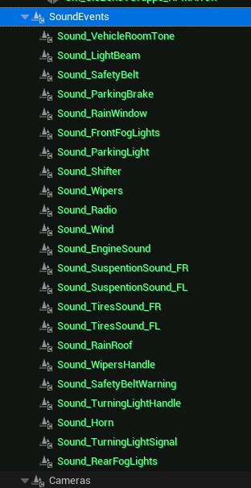
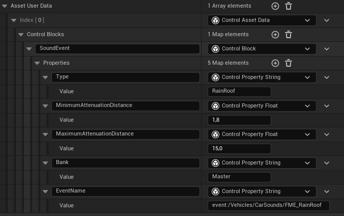
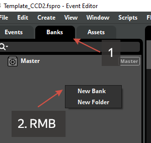
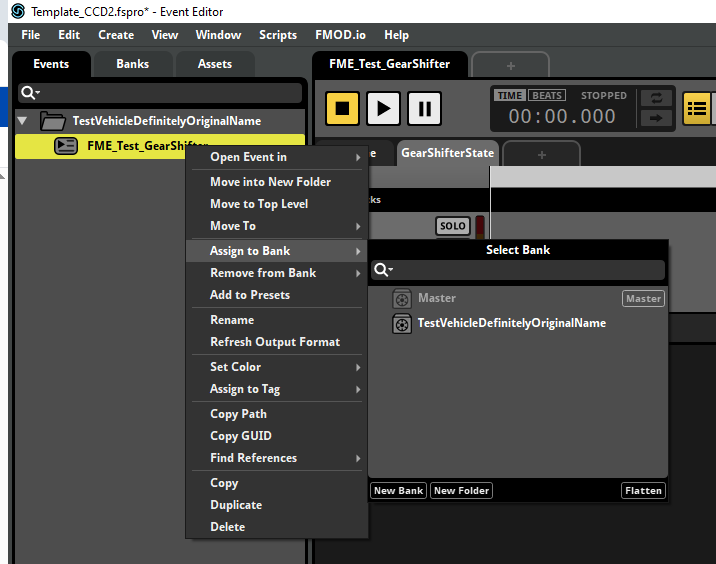
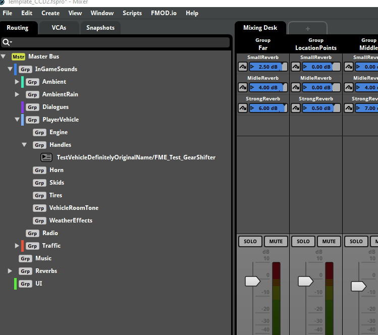
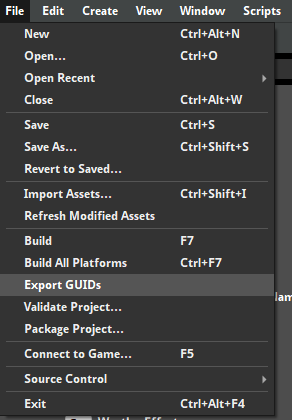

Navigation: README | 01. Minimal Car | 02. Exterior, Lights & World | 03. Interior, Dashboard & Cameras | 04. Mirrors & Wipers | 05. Sounds & FMOD | 06. Specs, Logic & Reference
City Car Driving 2.0 supports 3 levels of vehicle audio customization — pick whichever level fits your mod:
| Level | What You Do | Result |
|---|---|---|
| 1. Default (Zero Setup) | Do nothing. | Your car automatically uses a default set of sounds, though their 3D emitter positions may not match your vehicle's dimensions. |
| 2. In-Editor Setup (UE) | Place SceneComponent nodes with ControlBlock SoundEvent on your Actor. |
You set exact 3D sound positions, attenuation distances, and can pick any built-in sound event from stock game vehicles (e.g., a different engine or shifter sound). |
| 3. Custom Audio (FMOD Studio) | Build your own .bank and GUIDs.txt in FMOD Studio 2.03.14. |
Completely custom engine, horn, turn signals, switches, and any other vehicle sounds. |
Sound configuration uses the same ControlBlock workflow as other components. If you are happy with the default sound and position for any component, you can simply skip it.
V_<ModName>SceneComponent (+ Add → Scene) and position it at the sound's real source (e.g., engine under the hood, RainRoof at the roof center, Horn behind the grille, Radio at the head unit).
Asset User Data → Control Asset Data → ControlBlock named SoundEvent.Properties:| Property Name | Type | Required? | Description |
|---|---|---|---|
Type |
Control Property String |
Yes | Audio component type from the table in Section 1.2. Specifying only Type moves the default game sound to this SceneComponent's position. |
MinimumAttenuationDistance |
Control Property Float |
No | Minimum sound attenuation distance (if omitted, FMOD defaults are used). |
MaximumAttenuationDistance |
Control Property Float |
No | Maximum audible distance (if omitted, FMOD defaults are used). |
Bank |
Control Property String |
Pair with EventName |
Sound bank name (Master for built-in game sounds, or your custom .bank name without extension). Must always be set together with EventName! |
EventName |
Control Property String |
Pair with Bank |
Full FMOD event path (e.g., event:/Vehicles/CarSounds/FME_RainRoof). Must always be set together with Bank! |

Type, Bank & EventName ValuesWatch the exact spelling:
SuspentionSound_FR and SuspentionSound_FL are spelled with a t (Suspention), not an s! Write them verbatim.
Type |
Description | Bank |
Built-in EventName Options |
|---|---|---|---|
EngineSound |
Engine sound | Master |
event:/Vehicles/UlgaresFolk/FME_UlgaresFolk_WholeEngineevent:/Vehicles/HangugEclauto/FME_HangugEclauto_WholeEngineevent:/Vehicles/UlgaresGroberolf/FME_UlgaresGroberolf_WholeEngine |
VehicleRoomTone |
Ambient cabin interior room tone | Master |
event:/Vehicles/CarSounds/FME_VehicleRoomTone |
Shifter |
Gear shifter sound | Master |
event:/Vehicles/UlgaresFolk/FME_UlgaresFolk_Shifterevent:/Vehicles/HangugEclauto/FME_HangugEclauto_Shifter |
LightBeam |
Low-beam light switch | Master |
event:/Vehicles/CarSounds/FME_Handleevent:/Vehicles/CarSounds/FME_Click |
ParkingLight |
Parking light switch | Master |
event:/Vehicles/CarSounds/FME_Handleevent:/Vehicles/CarSounds/FME_Click |
FrontFogLights |
Front fog light switch | Master |
event:/Vehicles/CarSounds/FME_Handleevent:/Vehicles/CarSounds/FME_Click |
RearFogLights |
Rear fog light switch | Master |
event:/Vehicles/CarSounds/FME_Handleevent:/Vehicles/CarSounds/FME_Click |
WipersHandle |
Wiper stalk switch | Master |
event:/Vehicles/CarSounds/FME_Handleevent:/Vehicles/CarSounds/FME_Click |
Wipers |
Wiper blade movement sound | Master |
event:/Vehicles/CarSounds/FME_Wipers |
TurningLightHandle |
Turn signal stalk switch | Master |
event:/Vehicles/CarSounds/FME_TurningLightHandle |
TurningLightSignal |
Turn signal relay clicks | Master |
event:/Vehicles/CarSounds/FME_TurningLightsSignal |
SafetyBelt |
Seatbelt buckle / unbuckle sound | Master |
event:/Vehicles/CarSounds/FME_SafetyBelt |
SafetyBeltWarning |
Unfastened seatbelt chime (configured in Vehicle.ini) |
Master |
event:/Vehicles/CarSounds/FME_SafetyBeltWarning |
ParkingBrake |
Handbrake sound | Master |
event:/Vehicles/CarSounds/FME_ParkingBrake |
Horn |
Vehicle horn | Master |
event:/Vehicles/CarSounds/FME_Horn |
RainWindow |
Rain hitting the windshield | Master |
event:/Vehicles/CarSounds/FME_RainWindow |
RainRoof |
Rain hitting the roof | Master |
event:/Vehicles/CarSounds/FME_RainRoof |
Wind |
Aerodynamic wind noise (speed & surface dependent) | Master |
event:/Vehicles/CarSounds/FME_Wind |
SuspentionSound_FR / SuspentionSound_FL |
Front-right / front-left suspension impact sounds | Master |
event:/Vehicles/CarSounds/FME_SuspensionHit |
TiresSound_FR / TiresSound_FL |
Front-right / front-left tire surface sounds | Master |
event:/Vehicles/CarSounds/FME_Tires |
Radio |
3D position of the cabin radio | (omit) | No separate FMOD event — audio is driven by game logic. Set only Type = Radio (and optional attenuation distances). |
2.03.14 (exact version matters for runtime bank compatibility!).Template_CCD2 — clean template project for authoring your custom bank.Example_CCD2 — reference project showing all replaceable FMOD events.Never build your mod directly inside Example_CCD2!
Use Example_CCD2 strictly as a reference (to inspect event parameters, structure, and Mixer Bus assignments). Always author and build your bank inside a copy of Template_CCD2 to prevent file conflicts with the base game.
flowchart LR
F1["1. Copy Template_CCD2"] --> F2["2. New Unique Bank"]
F2 --> F3["3. Event + Assign Bank + Mixer Bus"]
F3 --> F4["4. Replace Audio Assets"]
F4 --> F5["5. Build (F7) + Export GUIDs"]
F5 --> F6["6. Copy to AudioBanks/<br/>& CopyPath in UE"]
Copy Template_CCD2 into a dedicated folder, optionally rename it after your mod, and open it in FMOD Studio 2.03.14.
BankCreate a new Bank with a globally unique name (e.g., MyFirstCarBank) to avoid conflicts with other mods. All of your custom events will be assigned to this bank.

Example_CCD2Example_CCD2 into your project, but always give each event a new unique name distinct from the example.BankRight-click your event → Assign to Bank → <YourBank>, and remove it from Master (so you don't collide with stock banks).


BusTo make in-game volume sliders control your sounds properly, open Mixer (Ctrl + 2) and drag your event onto the same Bus it used in Example_CCD2. (Copied events usually preserve bus routing automatically, but always double-check!)

Prepare your .wav / .ogg files in any external audio editor.

Build)Press F7 (or File → Build). Your compiled <YourBank>.bank file will appear under \Build\Desktop\ inside your FMOD project folder.

GUIDs.txtMandatory step! Click File → Export GUIDs. This generates GUIDs.txt in your FMOD project's \Build\ folder.

Plugins\Mods\Content\<ModName>\ and create a subfolder named AudioBanks (if it doesn't exist yet).AudioBanks/:
<YourBank>.bank (from \Build\Desktop\)GUIDs.txt (from \Build\)One mod — one Bank:
Keep all sounds for one vehicle in a single bank whenever possible. If you must use multiple banks, merge their GUIDs.txt files into a single GUIDs.txt containing all bank and event lines.
Copy Path.
V_<ModName>, select the target SceneComponent with ControlBlock SoundEvent, and fill in:
Bank — your bank name (without .bank).EventName — paste the copied path (e.g., event:/MyFirstCar/FME_MyHorn).
.pakClick Compile → Save All and run build_mod_dlc.bat — the AudioBanks/ folder will automatically be packaged into your .pak.
Next step: finish up with Module 6. Configurations, Physics, Custom Logic & Reference for vehicle card stats, switchable options, custom Blueprint logic, and the master cheat sheet.